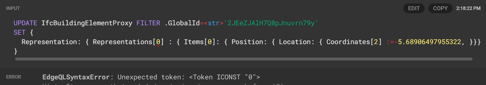

EdgeDB update statement issue#
So I started to look into how I make changes to nested properties using EdgeQL.
Note
In the following examples some intermediate abstract classes have been removed for purposes of simplifying this example, and the classes shown here is therefore not following the IFC standard accurately
The property subject to change is an array float property @index=2 on the Coordinates property in
a IfcCartesianPoint class.
type IfcCartesianPoint extending IfcPoint {
required property Coordinates -> array<float64>{
constraint expression on (len(__subject__) = 1 or len(__subject__) = 2 or len(__subject__) = 3)
};
}
The IfcCartesianPoint is a property attached quite far down a nested path from a “rooted” element type
IfcBuildingElementProxy.
type IfcBuildingElementProxy extending IfcProduct {
property PredefinedType -> str {
constraint one_of ('COMPLEX','ELEMENT','NOTDEFINED','PARTIAL','PROVISIONFORSPACE','PROVISIONFORVOID','USERDEFINED');
};
}
abstract type IfcProduct extending IfcObject {
link ObjectPlacement -> IfcObjectPlacement;
link Representation -> IfcProductRepresentation;
}
abstract type IfcProductRepresentation {
property Name -> str;
property Description -> str;
required multi link Representations -> IfcRepresentation;
}
abstract type IfcRepresentation {
required link ContextOfItems -> IfcRepresentationContext;
property RepresentationIdentifier -> str;
property RepresentationType -> str;
required multi link Items -> IfcRepresentationItem;
}
abstract type IfcRepresentationItem {
}
type IfcExtrudedAreaSolid extending IfcSweptAreaSolid {
required link ExtrudedDirection -> IfcDirection;
required property Depth -> float64;
}
abstract type IfcSweptAreaSolid extending IfcSolidModel {
required link SweptArea -> IfcProfileDef;
link Position -> IfcAxis2Placement3D;
}
type IfcAxis2Placement3D extending IfcPlacement {
link Axis -> IfcDirection;
link RefDirection -> IfcDirection;
}
abstract type IfcPlacement extending IfcGeometricRepresentationItem {
required link Location -> IfcCartesianPoint;
}
So in my first attempt I thought I could simply filter the desired root class and set the property directly like this
UPDATE IfcBuildingElementProxy FILTER .GlobalId=<str>'2JEeZJAlH7Q8pJnuvrn79y'
SET {
Representation: { Representations[0] : { Items[0]: { Position: { Location: { Coordinates[2] :=-5.68906497955322, }}}}}
}
However, that failed with the following error:

I then tried by massaging the syntax a little:
UPDATE IfcBuildingElementProxy FILTER .GlobalId=<str>'2JEeZJAlH7Q8pJnuvrn79y'
SET {
Representation.Representations[0].Items[0].Position.Location.Coordinates[2] :=-5.68906497955322
}
which didn’t like my . :(

Then inspired by a with block example from the docs I tried the following
with
point := (select IfcBuildingElementProxy.Representation.Representations[0].Items[0].Position.Location FILTER .GlobalId=<str>'2JEeZJAlH7Q8pJnuvrn79y')
update IfcCartesianPoint
set {
Coordinates := (0,0,-5.68906497955322)
}
That resulted in a different error
Then I tried a lot of different stuff and ended up with something that worked:
with
point := (select (select IfcBuildingElementProxy FILTER .GlobalId=<str>'3vJeEVZYzA3vP81uCmY9l4').Representation.Representations.Items[is IfcExtrudedAreaSolid].Position.Location)
UPDATE point
SET {
Coordinates := [0,0, -5.68906497955322]
}
But it only works because there is only 1 element in the Representation multi link and the 1 element of type
IfcExtrudedAreaSolid in the Items multi link.
What I would want to do is this:
with
point := (select (select IfcBuildingElementProxy FILTER .GlobalId=<str>'3vJeEVZYzA3vP81uCmY9l4').Representation.Representations[0].Items[0][is IfcExtrudedAreaSolid].Position.Location)
UPDATE point
SET {
Coordinates := [0,0, -5.68906497955322]
}
I’ve asked the edgedb devs on help here. Hopefully I’ll get some answers!
With help from the EdgeDB devs I made this work using the following pattern:
with
root := (select IfcBuildingElementProxy FILTER .GlobalId=<str>'3vJeEVZYzA3vP81uCmY9l4'),
lvl1 := (select array_agg(root.Representation.Representations)[0][is IfcShapeRepresentation]),
lvl2 := (select array_agg(lvl1.Items)[0][is IfcExtrudedAreaSolid]),
select {
update1 := (
with
lvl3 := (select lvl2.Position.Location),
UPDATE lvl3
SET {
Coordinates := [.Coordinates[0], .Coordinates[1], -5.68906497955322]
}),
update2:= (
with
lvl3 := (select lvl2.Position.RefDirection),
UPDATE lvl3
SET {
DirectionRatios := [-1.0, .DirectionRatios[1], .DirectionRatios[2]]
})
}